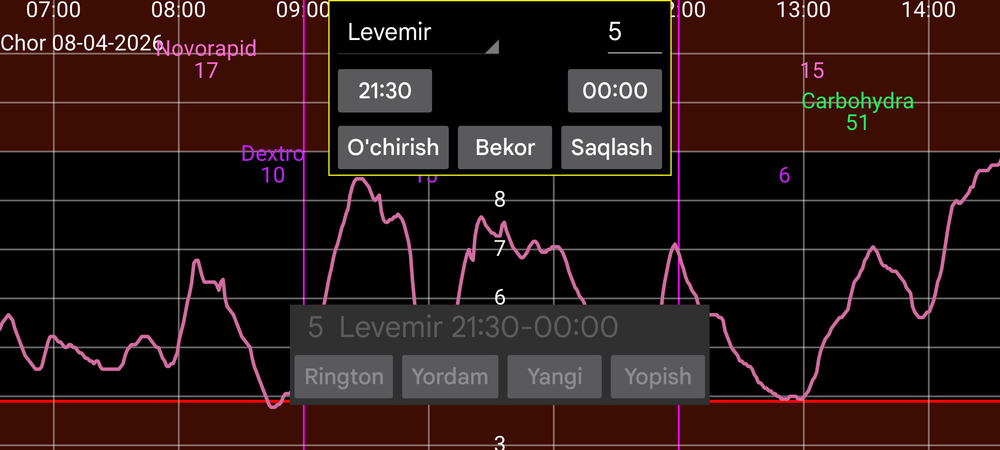

ar be de es fr hi it nl pl pt ru tr uk uz zh en
Eslatmalar ma’lum vaqt oralig‘ida ma’lum miqdor kiritilmagan bo‘lsa, sizni eslatib turadi.
Yangi tugmasini bosib yangi eslatma qo‘shishingiz mumkin.
Boshlanish va tugash vaqtini belgilang. Shu oraliqda ko‘rsatilgan yorliq ostida ko‘rsatilgan miqdor kiritilishi kerak bo‘ladi.
Tugash vaqti kelganda dastur boshlanish vaqtidan keyin shu yorliq ostida kamida ko‘rsatilgan miqdor kiritilgan-kiritilmaganini tekshiradi. Agar kiritilmagan bo‘lsa, bildirishnoma ko‘rsatiladi va qo‘ng‘iroq ohangi chalinadi.
Masalan:
Levemir 6.0
21:30 - 23:55
Agar shu kuni 21:30 dan keyin kamida 6 birlik Levemir kiritmagan bo‘lsangiz, 23:55 dan keyin eslatma olasiz.
Avvaldan kiritilgan eslatmalar ro‘yxatda ko‘rinadi. Ularni tahrirlash uchun ustiga bosing.
Hammasi to‘g‘ri ishlasa, Android qayta ishga tushirilgandan keyin ham foydalanuvchi Juggluco’ni qo‘lda ochmasdan eslatmalar ishlayveradi.
Ba’zi Huawei qurilmalarida dasturga tizim yuklanganda avtomatik ishga tushish ruxsatini berish kerak bo‘ladi. Bu Android Sozlamalari → Battery → App launch bo‘limida amalga oshiriladi. Juggluco uchun Manually managed ni tanlab, Auto-Launch va Run in Background ni yoqing. Bu signal yo‘qolishi signallari ham qayta yuklangandan keyin foydalanuvchi Juggluco’ni ishga tushirmasdan ishlashi uchun kerak.